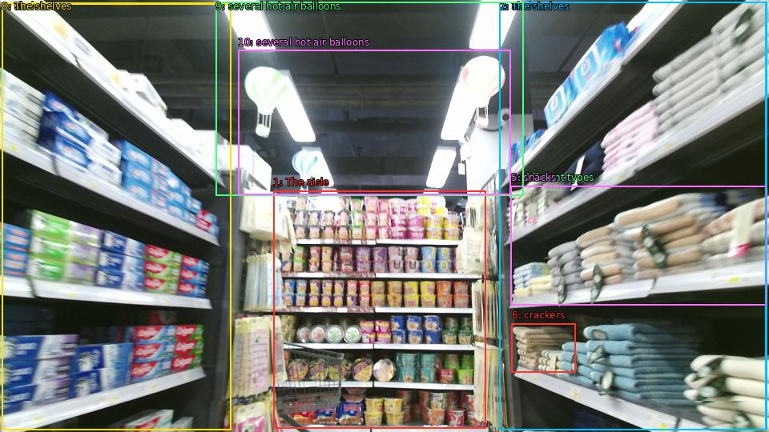

The image shows the interior of a grocery store aisle. The aisle is filled with shelves stocked with various types of food and drinks. On the left and right sides of the aisle, there are rows of shelves with different types of snacks and drinks, including chips, crackers, and other snacks. In the center of the image, there is a shelf with a variety of drinks and snacks. The shelves are arranged in a neat and orderly manner, and there are several hot air balloons hanging from the ceiling. The overall atmosphere of the store appears to be clean and well-stocked.

Original · Caption raw · Grounding raw · Koordinate
Številke so lokalni ID regije. Dolge slikovne oznake so skrajšane; spodaj so celotne fraze. Napovedane regije se lahko prekrivajo ali opisujejo skupine.
| ID | Celotna fraza | bbox xyxy |
|---|---|---|
| 1 | The aisle | [341.2799987792969, 238.41000366210938, 606.239990234375, 535.9500122070312] |
| 2 | shelves | [623.5199584960938, 2.9700000286102295, 957.5999755859375, 537.030029296875] |
| 3 | shelves | [2.3999998569488525, 4.050000190734863, 288.47998046875, 537.030029296875] |
| 4 | different types | [637.9199829101562, 232.4700164794922, 956.6399536132812, 381.510009765625] |
| 5 | snacks | [637.9199829101562, 232.4700164794922, 957.5999755859375, 381.510009765625] |
| 6 | crackers | [638.8800048828125, 404.19000244140625, 718.5599975585938, 465.7500305175781] |
| 7 | The shelves | [623.5199584960938, 2.9700000286102295, 956.6399536132812, 537.030029296875] |
| 8 | The shelves | [2.3999998569488525, 3.510000228881836, 288.47998046875, 537.030029296875] |
| 9 | several hot air balloons | [269.2799987792969, 2.430000066757202, 653.2799682617188, 244.8900146484375] |
| 10 | several hot air balloons | [297.1199951171875, 62.910003662109375, 637.9199829101562, 243.27000427246094] |